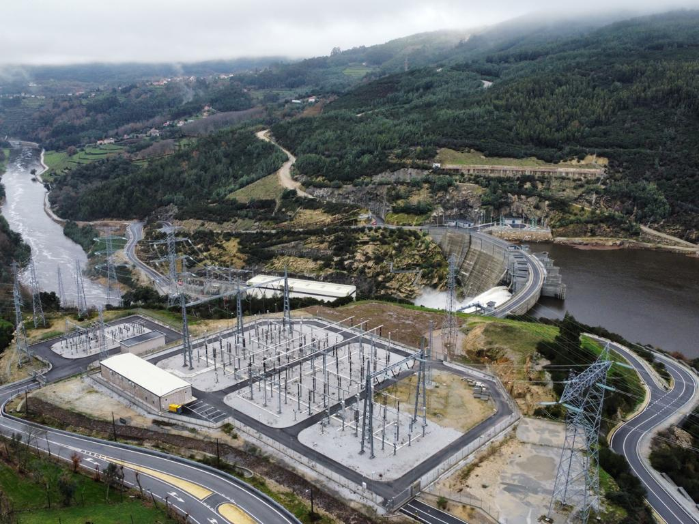
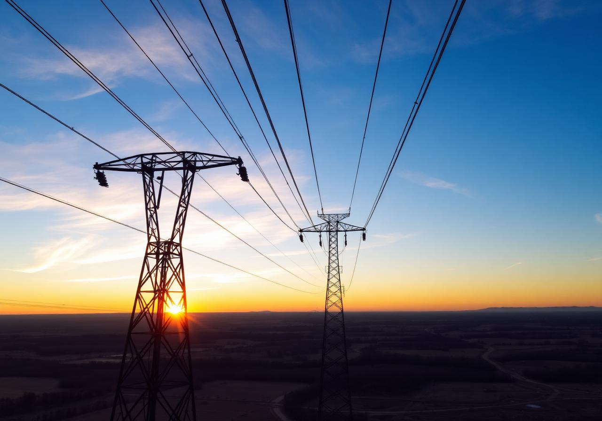
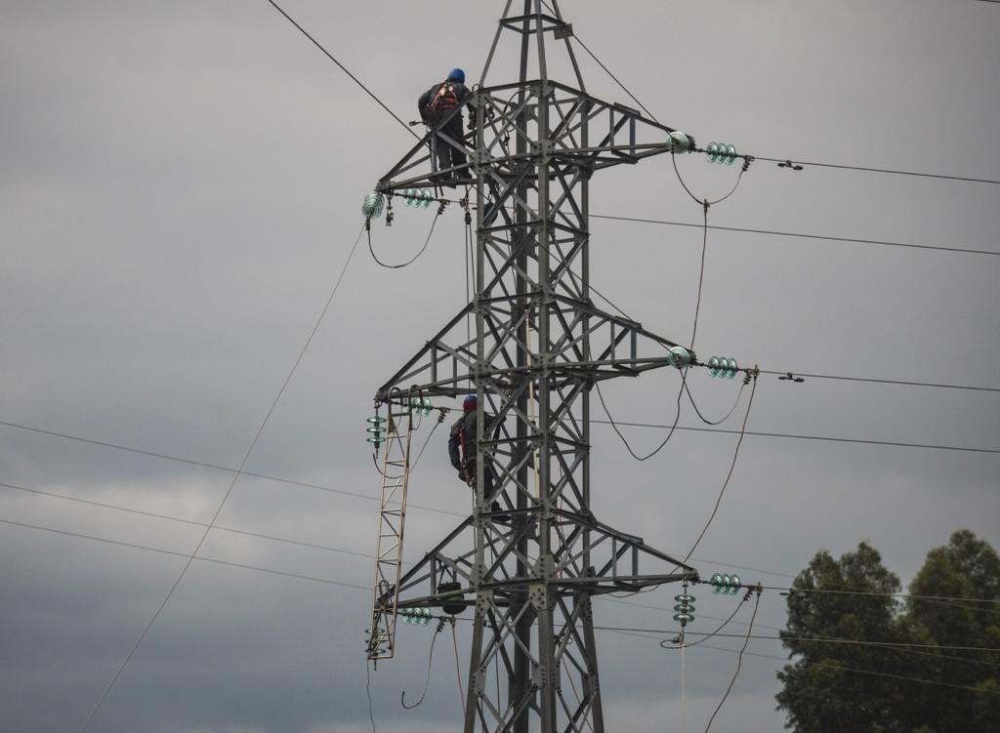

Portugal- Construcción de subestaciones y líneas en 60 kV y 400 kV
- Obras de transmisión asociadas a centrales hidroeléctricas
- Repotenciación de líneas de transmisión de 400 kV
Más de dos décadas ejecutando obras de transmisión eléctrica de alta y media tensión, integrando estándares internacionales con conocimiento local.
Líneas y subestaciones 132 kV
Subestaciones y líneas 60 kV y 400 kV
Líneas y subestaciones 69, 220 y 500 kV
Proyectos de transmisión 115 kV y 230 kV

Portugal
Brasil
Venezuela